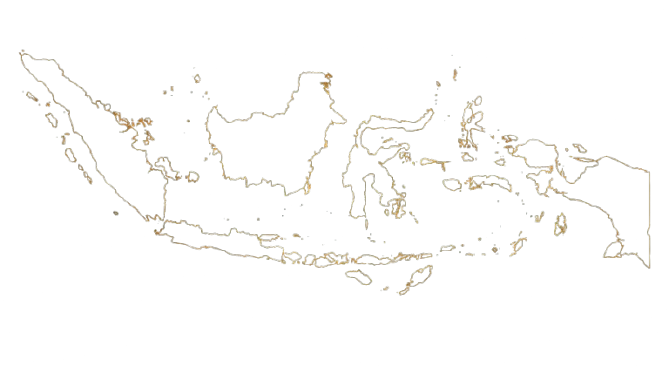

01 — Arsitektur
Mahakarya Batu
Mengenal keagungan candi dan detail arsitektur yang merekam kecerdasan peradaban masa lampau.

Seni · Sejarah · Tradisi
Menelusuri keindahan seni, kemegahan arsitektur, dan filosofi kehidupan yang tumbuh dari warisan budaya Jawa.
01 — Arsitektur
Mengenal keagungan candi dan detail arsitektur yang merekam kecerdasan peradaban masa lampau.

02 — Seni Rupa
Dari batik hingga ukiran, setiap karya menyimpan simbol, ketelitian, dan cerita kehidupan.

03 — Filosofi
Memahami nilai kebersamaan, keselarasan alam, dan kearifan yang diwariskan antargenerasi.
Mengenal Nusantara
Indonesia menyimpan beragam bahasa, seni, adat, dan tradisi. Temukan posisi budaya Jawa dalam kekayaan warisan Nusantara.

Kepulauan Indonesia
Sorotan Budaya
Pulau Jawa menjadi rumah bagi beragam tradisi, mulai dari wayang kulit dan gamelan hingga batik, keris, serta berbagai upacara adat.
Seni
Karya dan pertunjukan
Tradisi
Nilai lintas generasi
Rupa dan Irama Jawa
Menikmati keindahan visual dan ekspresi artistik yang menjadi bagian dari identitas budaya Jawa.

01 / Seni Rupa
Warna, bentuk, dan makna.
02 / Kreativitas
Inspirasi dalam setiap karya.

03 / Arsitektur
Kemegahan masa lampau.
04 / Kehidupan
Manusia dan lingkungannya.
Seni, Adat, dan Religi
Budaya Jawa tumbuh melalui perpaduan kesenian, nilai sosial, kepercayaan, dan kebiasaan masyarakat. Setiap tradisi memiliki latar belakang serta makna yang berbeda, mencerminkan cara masyarakat memahami kehidupan dan hubungannya dengan lingkungan.
Wayang kulit menyampaikan kisah dan nilai kehidupan, gamelan menghadirkan harmoni bunyi, sementara batik menyimpan keragaman motif yang berkembang di berbagai daerah.
Wayang
Seni pertunjukan penuh simbol.
Gamelan
Harmoni musik tradisional.
Batik
Motif dengan karakter khas.
Adat
Tradisi yang hidup di masyarakat.

Warisan Lintas Generasi
Mengenal masa lalu, merawat identitas, menatap masa depan.